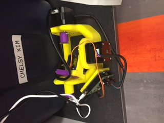

This week we are piecing together two robots: one egg-bot that can paint on eggs and another robot that can stand up on its own.
We used these two guides for the robots: egg-bot and b-robot.
We were not able to use inkscape to paint the wooden eggs, but the results are here.
We were able to start up the b-robot, and the system worked fine, but the problem is that the 3D-printed wheeels are too smooth and did not offer any friction for the wheels to turn. Nevertheless, here is its photo.